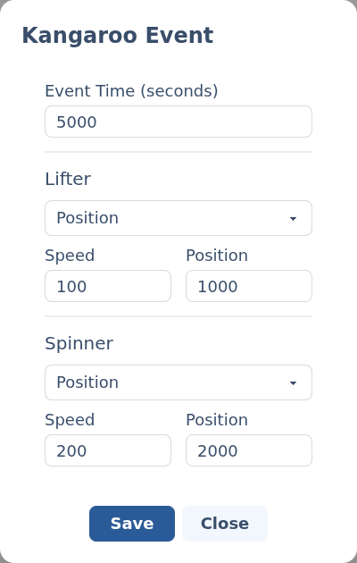

Kangaroo events.
A Kangaroo event drives a Kangaroo X2 motion controller — the two-channel board that runs closed-loop motors like a dome drive or leg tilt. One event can command both of its channels at once.
§Add a Kangaroo event
Add a Kangaroo X2 channel to your script (set the module up first under Other serial modules), then click its track at the time you want the move to happen. The Kangaroo event editor opens.
§The editor
The editor has an identical block for each of the Kangaroo's two channels, labelled with the names you gave them when you set up the module.

- Event Time (seconds) — where on the timeline the command fires.
- Action — what the channel does:
- None — leave this channel untouched.
- Start — power up / home the channel so it can take commands.
- Home — send it to its home position.
- Speed — run continuously at a set speed.
- Position — move to a target position (at the given speed).
- Speed — enabled for the Speed and Position actions.
- Position — enabled for the Position action only.
The numbers map to the Kangaroo's own units, which depend on how you tuned the board and its feedback. Set each channel up and teach its limits on the Kangaroo first; the script just drives it within them.
Back to Scripting animations.